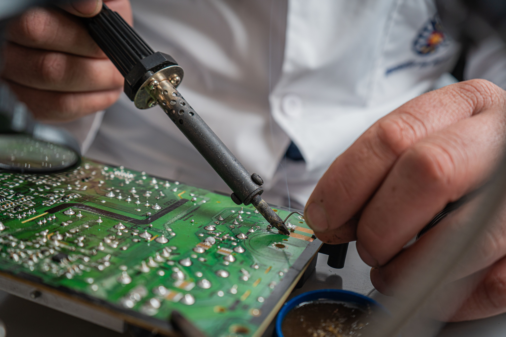

SOLUÇÕES INFORMÁTICAS
Oferecemos assistência informática para ajudar estudantes, famílias e pequenos negócios a utilizar os seus equipamentos com mais segurança, eficiência e confiança.
Conhece os serviços que disponibilizamos e encontra a solução adequada para as tuas necessidades.
Solicitar AssistênciaConhece as nossas principais áreas de assistência informática.

Ajudamos a identificar problemas de hardware e software e a encontrar soluções para recuperar o funcionamento do computador.
Pedir AssistênciaInstalamos e configuramos programas úteis para os estudos, o trabalho e as tarefas do dia a dia, garantindo uma utilização adequada.
Pedir AssistênciaRealizamos instalação, configuração e atualização de sistemas operativos compatíveis com os equipamentos, procurando garantir estabilidade e desempenho.
Pedir AssistênciaAjudamos na identificação de ameaças, remoção de software malicioso e adopção de medidas de protecção para os equipamentos e dados.
Pedir AssistênciaRealizamos cuidados de limpeza e verificações periódicas que ajudam a prevenir problemas e a prolongar a vida útil dos equipamentos.
Pedir AssistênciaConfiguramos redes locais, conectamos dispositivos e ajudamos a resolver problemas comuns de ligação à Internet e conectividade.
Pedir AssistênciaEstamos prontos para ajudar. Explica-nos o teu problema e vamos procurar a solução mais adequada às tuas necessidades.
Entrar em contacto